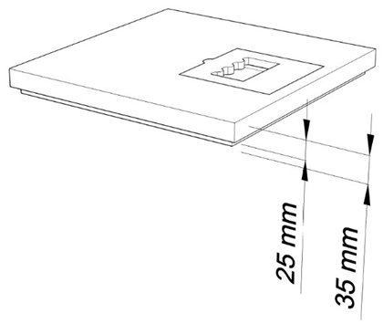
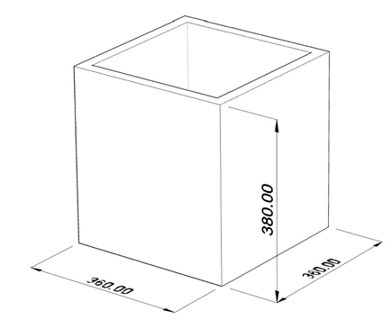
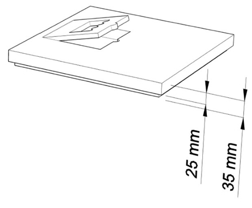
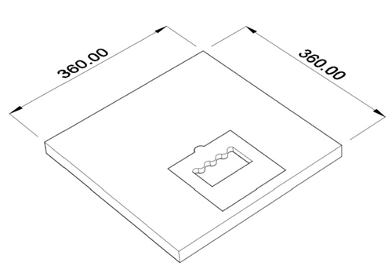
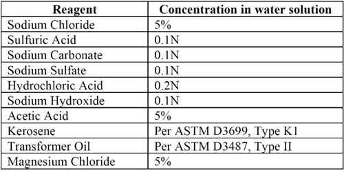

Siempre es más fácil conocer las normas ENEL-CODENSA
Rolex Rolex gold watch, compared with ordinary materials, gold watches are often expensive, but the replica rolex gold watch has the role of swiss replica watches hedging, so that it often becomes the first choice for collectors. The gold watch has value in the world, largely because the omega replica watch brand launched a commemorative limited edition watch or a replica hublot complex movement process or artistic attainments deep watches, mostly preferred gold precious metals such material. These watches tend to have a strong hedging function, therefore, Rolex Rolex gold watch reputation.

ET-AT932 Cajas prefabricadas con tapa, elaboradas con materiales poliméricos para uso a la intemperie en subestaciones primarias
Datos adicionales
Número de especificación
ET-AT932
Fecha de vigencia
04/01/2019
Herramientas adicionales
- Contenido Ocultar
- 1. OBJETO
- 2. ALCANCE
- 3. CONDICIONES DE SERVICIO
- 4. SISTEMA DE UNIDADES
- 5. NORMAS DE FABRICACIÓN Y PRUEBAS
- 6. REQUERIMIENTOS TÉCNICOS PARTICULARES
- 7. FABRICACIÓN DE LAS TAPAS Y CAJAS
- 8. PARÁMETROS GEOMÉTRICOS
- 9. PRUEBAS DE LABORATORIO
- 9.1 PRUEBAS TIPO
- 9.2 PRUEBAS DE RUTINA
- 9.3 PRUEBAS DE RECEPCIÓN
- 10. ENSAYOS DE LABORATORIO
- 11. MARCAS
- 12. REQUISITOS DE LAS OFERTAS
- 13. SUMINISTRO Y RECEPCION CAJAS
- 13.1 TOLERANCIAS ACEPTADAS
- 13.2 RECEPCIÓN DE CAJAS Y TAPAS
- 13.3 MOTIVOS DE RECHAZO
- 14. GARANTÍA DE FÁBRICA
- 15. INSPECCIÓN EN FÁBRICA
- 16. CERTIFICADOS DE CONFORMIDAD
1. OBJETO
Establecer las características, requisitos y ensayos técnicos que deben cumplir las cajas y tapas poliméricas, para ser usadas en subestaciones de alta y media tensión.2. ALCANCE
Esta especificación técnica se aplicará en todas las cajas poliméricas para subestaciones A.T y M.T que adquiera ENEL-CODENSA.La instalación de estas cajas y tapas está prevista para zonas de tráfico vehicular pesado ocasional, en contacto moderado con agentes químicos.
3. CONDICIONES DE SERVICIO
Las cajas y tapas poliméricas en subestaciones A.T y M.T, serán empleadas a la intemperie bajo las siguientes condiciones:| CARACTERÍSTICAS GENERALES | |
| Altura sobre el nivel del mar | Desde 2900 a los 600 m.s.n.m. |
| Ambiente | Tropical |
| Humedad relativa | Desde 100% al 20% |
| Temperatura máxima y mínima | +45 °C y -5 °C respectivamente |
| Temperatura promedio | 14 °C |
| Polución | Alta con productos de combustión y altamente contaminada por otros agentes. |
| Temperatura y radiación solar | Alta teniendo en cuenta las diferentes áreas de Bogotá y Cundinamarca |
| Tráfico | Tráfico vehicular pesado no deliberado ocasional |
| Contacto con agentes químicos | Moderado |
| tensión nominal | 220V, 11.400 V,13.200 V, 34.500V |
| Tensión Máxima | 35.000 V |
| Frecuencia del sistema | 60 Hz |
4. SISTEMA DE UNIDADES
Todos los documentos tanto de la propuesta como del contrato de suministro, deben expresar las cantidades numéricas en unidades del Sistema Internacional (SI). Si el oferente utiliza en sus libros de instrucción, folletos o dibujos, unidades en sistemas diferentes, debe hacer las conversiones respectivas.5. NORMAS DE FABRICACIÓN Y PRUEBAS
| NORMA | DESCRIPCION |
| ANSI/SCTE 77- 2017 | Specifications for Underground Enclosure Integrity |
| ASTM D543-14 | Standard Practices for Evaluating the Resistance of Plastics to Chemical Reagents |
| ASTM D570-98 (2010) | Standard Test Method for Water Absorption of Plastics |
| ASTM D635-06 | Standard Test Method for Rate of Burning and/or Extent and Time of Burning Plastics in a Horizontal Position |
| ASTM D2444-99 (2010) | Standard Test Method for Determination of the Impact Resistance of Thermoplastic Pipe and Fittings by Means of a Tup (Falling Weight) |
| ASTM G154-12 | Standard Practice for Operating Fluorescent Light Apparatus for UV Exposure of Nonmetallic Materials |
| ASTM C1028-07 | Standard Test Method for Determining the Static Coefficient of Friction of Ceramic Tile and Other Like Surfaces by the Horizontal Dynamometer Pull-Meter Method |
| ASTM D883 | Terminology Relating to plastics |
Pueden emplearse otras normas internacionalmente reconocidas, equivalentes o superiores a las aquí señaladas, siempre y cuando se ajusten a lo solicitado en la presente especificación técnica.
Las normas citadas en la presente especificación (o cualquier otra que llegase a ser aceptada por ENEL-CODENSA.) se refieren a su última revisión.
6. REQUERIMIENTOS TÉCNICOS PARTICULARES
Las cajas y tapas poliméricas para subestaciones A.T y M.T, estarán construidas con materiales que cumplan los siguientes requisitos:- Resistencia a reactivos químicos
- Resistencia al efecto de la radiación UV. (Tapa)
- Resistencia absorción de agua
- Retardante a la llama
- Alta resistencia a la tracción y a la flexión.
- Rigidez dieléctrica elevada Mayor o igual a mayor a 100 Mega-Ohmios
- Resistente a Impactos
- Tapa Resistente al deslizamiento
- Debe ser libre de mantenimiento.
- No debe contener elementos que sirvan de alimento o permitan ser atacadas por microorganismos.
- vida útil igual o mayor a 25 años.
7. FABRICACIÓN DE LAS TAPAS Y CAJAS
Las cajas y tapas deberán ser fabricadas en materiales Poliméricos, con Medidas externas de 36cm x 36cm de ancho x 38cm de alto indicadas en el numeral 8.0 Parámetros geométricos, Ideal para tráfico pesado ocasional.Cada elemento (caja y/o tapa), no podrán superar los 25 Kilogramos de peso.
La caja y la tapa, deberán ser productos monolíticos.
No se permite material en metal, ni concreto, ni derivados de arcillas. Sólo materiales Poliméricos. (Aplica también para los refuerzos)
Las tapas podrán traer refuerzos en la parte inferior del mismo material.
La tapa deberá llevar en la parte frontal en bajo relieve el texto “NO RECICLABLE”. El texto deberá ser legible a una altura de 1.60 m.
El proveedor debe garantizar el sistema de aseguramiento de la tapa a la caja, evitando que la tapa se salga de su lugar por flotación o aplastamientos.
La caja será perforada en terreno, con campana de freno (3/4”, 1” y 1”½) para que los tubos metálicos no se resbalen y entren a la caja, la caja debe incluir un terminal de frenado que no permita el ingreso del tubo a la caja. Hará parte del suministro la herramienta para hacer la perforación de la caja por cada 100 cajas entregadas.
El suministro de campanas elemento de perforación, serán a solicitud de Enel-Codensa.
Se debe incluir capacitación en Bogotá sobre el armado y perforación del producto en caso de ser necesario.
8. PARÁMETROS GEOMÉTRICOS
Las cajas y tapas poliméricas para subestaciones de A.T y M.T, serán de la forma y dimensiones que se muestran en las siguientes figuras.



9. PRUEBAS DE LABORATORIO
9.1 PRUEBAS TIPO
9.1.1 Prueba de Carga Estructural ANSI/SCTE 77- 2017| Requerimientos de Carga (Tier 15) | ||
| Vertical | Carga de Diseño | 66.7 KN |
| Carga de Prueba | 100.1 KN | |
| Lateral | Carga de Diseño | 38.3 KN |
| Carga de Prueba | 57.5 KN | |
Criterios de Aceptación
| Prueba de carga estructural | Máxima deflexión vertical en la carga de diseño | Desviación lateral máxima en la carga de diseño |
| Prueba de carga lateral | N/A | 21 milímetros por metro de longitud promedio de pared |
| Prueba de carga vertical | 13 milímetros | 21 milímetros por metro de longitud promedio de pared |
| Prueba de carga vertical de la cubierta | 13 milímetros | N/A |
El procedimiento de los ensayos de carga estructural para carga de diseño y prueba, se encuentran descritos en la norma ANSI/SCTE 77- 2017.
9.1.2 Resistencia a impactos mecánicos - ASTM D2444
En la norma ANSI/SCTE 77 2017, se indica que la tapa deberá soportar un impacto de 95 Nm (70Lb/pie) acorde a la norma ASTM D2444.
La prueba se realiza sobre la tapa, en una superficie plana y rígida, como una placa de hormigón o de acero.
9.1.3 Resistencia al deslizamiento – ASTM C1028-06
El coeficiente estático de fricción de esta superficie debe ser de un mínimo de 0.50 según lo determinado en ASTM 1028-06 Sección 8.
9.1.4 Resistencia a la degradación UV – ASTM G-154
La tapa deberá presentar resistencia a la degradación producida por la exposición de rayos ultravioleta.
Cupones de material con las mismas dimensiones que los cupones de control se medirán, pesarán y probarán de acuerdo con ASTM G154, durante 1000 horas para simular la radiación solar directa UV.
Se deberá conservar mínimo el 75% de los valores de carga de diseño y deflexión y no presentar variación del 2% en el peso.
9.1.5 Resistencia a agentes químicos – ASTM D543 - ANSI/SCTE 77- 2017
Cupones de material con las mismas dimensiones que los cupones de control, se medirán, pesarán y probarán de acuerdo con ASTM D543, los cuales serán expuestos con los reactivos químicos de la siguiente tabla:
Reactivo / Concentración en agua de la norma ANSI/SCTE 77- 2017.

Se deberá conservar mínimo el 75% de los valores de carga de diseño y deflexión y no presentar variación del 2% en el peso.
9.1.6 Resistencia a la absorción de humedad – ASTM D570
Cupones de material con las mismas dimensiones que los cupones de control, se medirán, pesarán y probarán de acuerdo con ASTM D570, Secciones 6, 7.1 y 7.5, durante la prueba de 24 horas y para la prueba de ebullición.
Se deberá conservar mínimo el 75% de los valores de carga de diseño y deflexión y no presentar variación del 2% en el peso.
9.1.7 Retardancia a la llama ASTM D635
Al colocar la llama en un extremo de una muestra de material de la tapa de 25 mm x 125 mm, la rata de propagación de la llama no debe ser mayor de 8 mm por minuto por cada 3 mm de espesor.
9.1.8 Verificación Dimensional y Visual
La verificación de las dimensiones se hará con los instrumentos de medida que den la aproximación requerida y calibrador para los espesores.
Durante la inspección visual, las cajas y tapas no deben presentar evidencias de agrietamiento transversal o longitudinal, rotura, laminación o desmoronamiento al igual que desprendimiento de las paredes.
No se aceptarán tapas y cajas con resanes, cuando la profundidad sea igual al espesor de pared del producto.
9.2 PRUEBAS DE RUTINA
El proveedor realizará las pruebas establecidas en el numeral 9.1.89.3 PRUEBAS DE RECEPCIÓN
En la recepción del material, se realizarán las pruebas definidas en los numerales 9.1.1, 9.1.2, 9.1.3 y 9.1.8Las pruebas mecánicas se realizarán en la primera recepción por contrato y al cumplir el 50% de la cantidad total a suministrar.
10. ENSAYOS DE LABORATORIO
El registro completo de los ensayos debe estar disponible para ENEL-CODENSA., durante el tiempo que dure la fabricación y por los dos años siguientes a su terminación.Todos los ensayos descritos en esta especificación se deben realizar por parte del fabricante y se deben entregar a Enel-Codensa, los cuales no podrán tener más de 2 años de vigencia a partir del inicio de licitación.
Los laboratorios destinados a la ejecución de las pruebas tipo, deberán ser laboratorios reconocidos y/o acreditados a nivel nacional.
Para la ejecución de las pruebas de recepción, los laboratorios no requieren acreditación.
11. MARCAS
Todas las tapas deberán llevar, en forma clara una leyenda en bajo relieve la siguiente información:- Palabra NO RECICLABLE
- Palabra BOG-CUN
- Nombre o razón social del fabricante
- Peso máximo carga soportada en kg en el cuerpo de la tapa y la caja.
- Fecha de fabricación, día mes año.
- Peso de la tapa kg
- Peso de la caja kg
- Peso total kg
- No. Contrato u orden de compra
12. REQUISITOS DE LAS OFERTAS
La oferta técnica deberá entregarse en medio magnético. El oferente deberá incluir con su propuesta la siguiente información:- Relación de los bienes cotizados.
- Información del oferente, relación de clientes, evidencia de su capacidad técnica y experiencias relacionadas con los materiales y/o equipos cotizados.
- Listado de normas técnicas aplicables a los bienes cotizados.
- Planilla de características técnicas garantizadas indicada en el anexo1, la cual deberá ser diligenciada completamente por el oferente. Esta planilla debe entregarse en formato Excel y por ningún motivo debe ser modificada, ya que puede ser causal de rechazo para la oferta.
- Catálogos originales, completos y actualizados, que contengan características técnicas principales correspondientes a los bienes cotizados en la planilla de características técnicas garantizadas.
- Protocolos de pruebas de acuerdo con las normas indicadas en esta especificación en laboratorios acreditados. En tales protocolos se deberán anotar las fechas de fabricación y de realización de las pruebas, para permitir la verificación de las características técnicas garantizadas. Así mismo las fotocopias de los certificados de laboratorios internacionales cuando las pruebas deban ser hechas fuera del país.
- El oferente adjuntará con su propuesta el certificado del sistema de calidad (ISO 9001).
- Los oferentes deberán ofrecer una garantía absoluta de sus productos de por lo menos dos (2) años.
- Información adicional que considere aporta explicación a su diseño (dibujos, detalles, características de operación, dimensiones y pesos de los materiales ofertados).
- Relación de las excepciones de carácter exclusivamente técnico de la oferta, respecto a los bienes solicitados. Si la oferta no presenta excepción, esto se indicaría expresamente.
Enel-Codensa. Podrá descartar ofertas que no cumplan con las anteriores disposiciones, sin expresión de causa ni obligación de compensación.
13. SUMINISTRO Y RECEPCION CAJAS
13.1 TOLERANCIAS ACEPTADAS
Se acepta una tolerancia en la longitud, ancho y alto de la tapa y el marco de ± 3 milímetros. (Externa)13.2 RECEPCIÓN DE CAJAS Y TAPAS
Para llevar a cabo las labores de inspección y recepción de tapas y cajas, se establece el siguiente plan de muestreo, determinado acorde al tamaño del lote, el número de unidades a los cuales se les debe practicar la inspección visual y pruebas mecánicas de recepción, para la aceptación o rechazo:INSPECCION VISUAL Y DIMENSIONAL (Nivel de Inspección general II, NCA = 4%)
| Tamaño del lote | Tamaño de muestra | Aceptación | Rechazos |
| 2 - 25 | 3 | 0 | 1 |
| 26 - 90 | 13 | 1 | 2 |
| 91 -150 | 20 | 2 | 3 |
| 151-280 | 32 | 3 | 4 |
| 281-500 | 50 | 5 | 6 |
| 501-1200 | 80 | 7 | 8 |
PRUEBAS MECÁNICAS (Nivel de Inspección general S1, NCA = 4%)
| Tamaño del lote | Tamaño de muestra | Aceptación | Rechazos |
| 2-ago | 2 | 0 | 1 |
| sep-15 | 2 | 0 | 1 |
| 16-25 | 2 | 0 | 1 |
| 26-50 | 2 | 0 | 1 |
| 51-90 | 3 | 0 | 1 |
| 91-150 | 3 | 0 | 1 |
| 151-280 | 3 | 0 | 1 |
| 281-500 | 3 | 0 | 1 |
| 501-1200 | 5 | 0 | 1 |
13.3 MOTIVOS DE RECHAZO
El incumplimiento a cualquiera de los requisitos establecidos en la especificación técnica, será causal de rechazo para el producto.14. GARANTÍA DE FÁBRICA
Enel-Codensa requiere como mínimo, un período de garantía de fábrica de veinticuatro (24) meses, a partir de la entrega de los bienes.15. INSPECCIÓN EN FÁBRICA
El valor de las pruebas y ensayos debe incluirse en los precios cotizados en la propuesta. ENEL-CODENSA. Se reserva el derecho de descartar las propuestas que no ofrezcan pruebas, o si las ofrecidas son consideradas insuficientes para garantizar la calidad de los dispositivos.16. CERTIFICADOS DE CONFORMIDAD
El oferente podrá adjuntar con su propuesta el certificado de conformidad de producto con norma técnica, expedido por una entidad autorizada por la ONAC- Organismo Nacional de Acreditación de ColombiaANEXO 1. RELACIÓN DE LOS BIENES COTIZADOS
| Código | Descripción | cantidad |
ANEXO 2. TABLA DE CARACTERISTICAS TÉCNICAS GARANTIZADAS
| ITEM | DESCRIPCION | SOLICITADO | OFERTADO | ||
| 1 | Proveedor | A especificar por el fabricante | |||
| 2 | Fabricante | A especificar por el fabricante | |||
| 3 | Pais del fabricante | A especificar por el fabricante | |||
| 4 | Normas técnicas de diseño y pruebas | las indicadas en esta especificación | |||
| 5 | Cumple con las dimensiones indicadas en la Especificación Técnica | SI | |||
| 6 | Peso total (kg) | Máximo 25 kg por cada elemento | |||
| 7 | Adjunta protocolos de la prueba Carga Estructural ANSI/SCTE 77- 2017 | SI | |||
| 8 | Adjunta protocolos de la prueba de Resistencia a impactos mecánicos - ASTM D2444-99 | SI | |||
| 9 | Adjunta protocolos de la prueba de Resistencia al deslizamiento – ASTM C1028-06 | SI | |||
| 10 | Adjunta protocolos de la prueba de resistencia a la degradación UV – ASTM G-154 | SI | |||
| 11 | Adjunta protocolos de la prueba de Resistencia a agentes químicos – ASTM D543 | SI | |||
| 12 | Resistencia a la absorción de humedad – ASTM D570 | SI | |||
| 13 | Retardancia a la llama ASTM D635, Sections 4, 5 and 6 | SI | |||
| 14 | Capas contructivas numeral 7: | ||||
| * | Incluye top coat ASTM- G154. | SI | |||
| * | Incluye mantas de fibra de vidrio ANSI C136 | SI | |||
| * | Incluye resina de poliéster inyectada que elimina la exposición de fibras | SI | |||
| 15 | Incluye muestra muestra física desde el borde mínimo 10 cm de largo x 6,0 cm de altura del corte de la tapa | SI | |||
| 16 | Incluye foto microscopica ampliada que evidencie cada una de las capas de fabricación de la tapa | SI | |||
| Incluyen tornillos de cabeza perdible y tapon | SI | ||||
| 17 | Incluye marcación según numeral 12,1 | SI (describir metodo) | |||
| 18 | Vida útil (años) | minimo 25 | |||
| 19 | Garantía (años) | minimo 2 | |||
| RESULTADO DE EVALUACIÓN TÉCNICA | |||||
| 20 | Certificación de sistema de calidad | Entidad acreditadora | |||
| Número de acreditación | |||||
| Fecha de aprobación (día/mes/año) | |||||
| Vigencia | |||||
| Adjunta el certificado (Si/No) | |||||
| 21 | Certificación con normas técnicas | Entidad acreditadora | |||
| Número de acreditación | |||||
| Fecha de aprobación (Día/Mes/Año) | |||||
| Vigencia | |||||
| Norma técnica con la cual se certifica | |||||
| Adjunta el certificado (Si/No) | |||||
| RESULTADO DE EVALUACIÓN REGULATORIA | |||||
| 22 | OBSERVACIONES | ||||